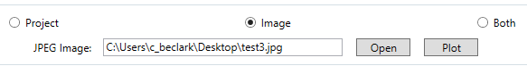
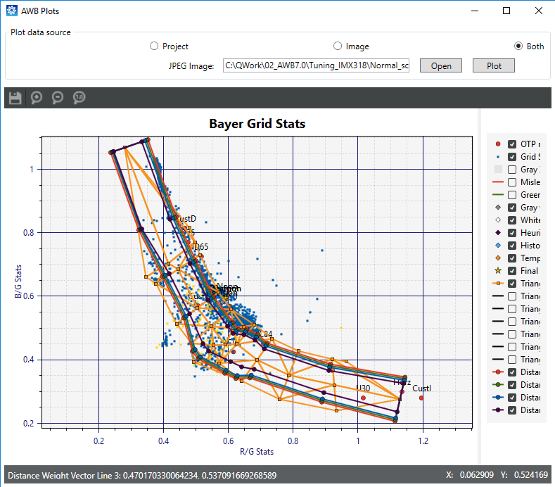

Use this procedure to view the Bayer grid (BG) stats plot for a JPEG image.
Prerequisite: Run AWB initial tuning.
- In the Chromatix tool, click the AWB
tab.
- Click the AWB Plots button.
- Select a a JPEG image in the Plot data
source section using one of these methods:
- Click Open, then navigate to and
select a JPEG image.
- Copy and paste the path to a JPEG image in the JPEG
Image: field, then click Plot.
- Select Image at the top of the window
to see the BG stats plot, or select Both to see the BG stats
plot and the triangle mesh.

Figure : Bayer grid stats plot and triangle mesh for the selected
image
